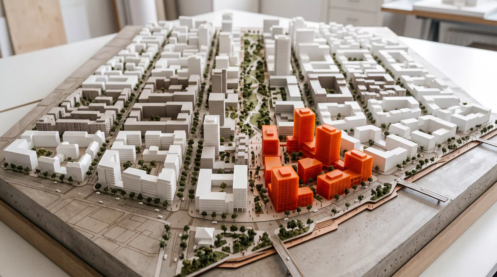

Das Arbeitsmodell zeigt den Rahmenplan im Maßstab 1:500 — Blockränder in Weiß, der Grünzug als durchlaufendes Rückgrat, die Baufelder der dritten Phase an der Hafenkante in Orange abgesetzt. Was im Modell greifbar ist, bleibt im Plan verbindlich: klare Kanten, gemischte Höfe, kurze Wege.

Kein Monolith, sondern Mischung: Wohnen über belebten Erdgeschossen, Arbeit an der Hafenkante, Kita und Grundschule im Quartier — und ein Freiraum, der nicht Restfläche ist, sondern Adresse.
Ein 60 Meter breiter Grünzug durchzieht das Quartier von Nord nach Süd — kein Park am Rand, sondern die Mitte selbst. Er verbindet Kita, Schule und Hafenkante, nimmt Starkregen auf und kühlt die Blöcke im Sommer.